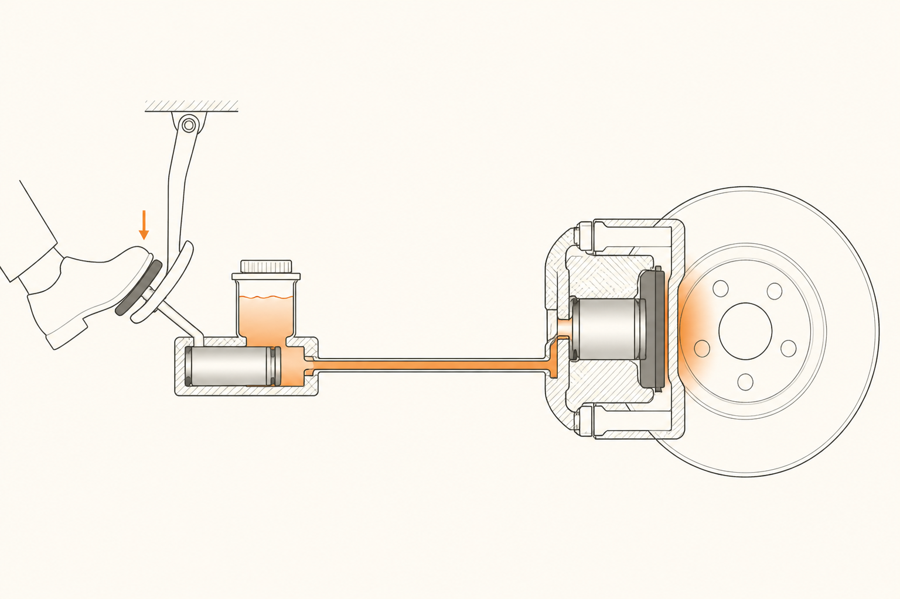

El truco hidráulico: cómo el pedal mueve 1.500 kg
En la píldora anterior dejamos claro qué hacen los frenos: convertir movimiento en calor por fricción. Pero queda un puzzle inquietante. La pastilla tiene que apretar el disco con fuerza brutal — varias toneladas de presión — y la única fuente de fuerza disponible eres tú, con una pierna y un pie. ¿Cómo encaja eso?
El truco que viene de la cocina
Imagina dos jeringas conectadas por un tubito lleno de agua. Una pequeña, una grande. Si aprietas el émbolo de la jeringa pequeña con dos dedos, el émbolo de la jeringa grande sube empujando un peso considerable — mucho más de lo que tus dos dedos podrían levantar directamente. Esto no es magia: es el principio que descubrió Pascal en el siglo XVII, y es exactamente lo que tu pedal usa cada vez que frenas.
La idea es esta: cuando aprietas un líquido encerrado, la presión que generas se transmite igual a todos los puntos del líquido. Si el líquido empuja una pieza pequeña aquí y una grande allá, la fuerza total que aplica a la pieza grande es proporcional a su área. Pequeña presión sobre área grande = fuerza grande. Truco simple, efecto enorme.

Componentes, en orden
El recorrido de tu fuerza es éste:
Pedal → primer multiplicador. El pedal es una palanca: el punto donde apoyas el pie está más lejos del eje que el punto donde empuja el bombín. Solo con eso ya multiplicas tu fuerza por 4 o por 5 antes de tocar líquido.
Bombín maestro → es la jeringa pequeña. El pedal empuja un émbolo pequeño dentro de un cilindro lleno de líquido de frenos. Ahí nace la presión.
Latiguillos → tubos blindados que llevan el líquido a las cuatro ruedas. Son flexibles porque las ruedas se mueven (suspensión, dirección), pero internamente reforzados para no dilatarse cuando llega presión.
Pinzas → la jeringa grande. En cada rueda, una pinza con uno o varios émbolos grandes recibe la presión y empuja las pastillas contra el disco. Aquí es donde tu pierna se convierte en toneladas de fuerza.
El líquido importa más de lo que parece
Para que el sistema funcione, el líquido tiene que ser incompresible: si tú aprietas aquí, ahí tiene que reaccionar al instante, sin que el líquido se "achuche" como una esponja. Por eso no se usa agua corriente (hierve y se mezcla con aire) sino un líquido específico llamado líquido de frenos — DOT 4 o DOT 5.1 son los más comunes.
Y hay un detalle traicionero: el líquido de frenos es higroscópico. Eso significa que absorbe humedad del aire poco a poco, incluso por los microporos de los latiguillos. Con el tiempo, esa humedad baja el punto de ebullición del líquido. Si frenas mucho en un puerto largo y el líquido viejo hierve, se forman burbujas de vapor y vuelve la sensación de pedal blando — exactamente igual que si hubiera entrado aire. Por eso hay que cambiar el líquido cada dos años, aunque no se "use".
Estos cuatro tactos son el primer punto de contacto del cliente con la salud del sistema. Aprender a traducirlos es la base de cualquier conversación útil sobre frenos en concesionario.
La frase que te llevas
El sistema hidráulico convierte tu pierna en toneladas de presión gracias al principio de Pascal: poca fuerza sobre área pequeña se traduce en mucha fuerza sobre área grande. El líquido es lo que transmite la magia, y el aire (o el vapor) lo arruina.
Ya sabemos cómo llega la fuerza a la rueda. La siguiente píldora resuelve el otro extremo: ¿qué encuentra esa fuerza al llegar? Hay dos geometrías posibles, disco y tambor, y la elección no es trivial.
fácil Un cliente entra al taller y dice "el pedal está blando, se hunde mucho antes de frenar". ¿Qué dos cosas son las primeras a mirar?
medio Si el émbolo del bombín maestro tiene 2 cm² de área y el émbolo de la pinza tiene 20 cm², ¿cuánto se multiplica la fuerza al llegar a la pinza?
reto ¿Por qué no se usa agua como líquido de frenos? Da al menos dos razones técnicas y una operativa.
Técnicas:
1) El agua hierve a 100°C, y los frenos pueden superar los 200°C en uso intenso. Vapor en el circuito = pedal blando = pierdes frenada.
2) El agua congela a 0°C. Cualquier mañana de invierno bajo cero dejaría el coche sin frenos hasta que se descongelase.
Operativa:
3) El agua oxida el metal. Bombín, pinzas, latiguillos: todo el sistema se corroería desde dentro en pocos meses.
El líquido de frenos (DOT 4/5.1) está formulado precisamente para esquivar las tres: hierve a 230°C+, no congela en uso normal y no ataca los componentes. La contrapartida — que absorbe humedad y por eso hay que cambiarlo — es el precio razonable.